Tutorial Tampilan PPV Stream
Panduan bergambar untuk setiap pengguna: tamu, penonton, kreator, affiliate, dan admin. Setiap layar diberi badge bernomor 1 yang dijelaskan di bawah gambar, mulai dari menu navigasi sampai aktivitas sehari-hari.
Cara membaca tutorial ini
Semua gambar adalah tangkapan layar asli dari halaman public/*.html di repo ini, dibuka di Chrome. Badge oranye dan garis tepi ditambahkan saat pengambilan gambar dan tidak ada di aplikasi.
Tombol 🌙 di navbar mengganti tema terang/gelap. Tutorial memakai tema terang.
budi_penonton, rina_kreator, sari_affiliate, email @example.com, nomor rekening, alamat wallet, dan nominal transaksi semuanya karangan. Tidak ada data pribadi pengguna sungguhan.Peran dan menu yang terlihat
Penonton, kreator, dan affiliate memakai akun yang sama. Satu akun bisa membeli video, mengunggah video, dan membagikan link referral. Admin memakai login terpisah dengan navbar merah.
| Peran | Masuk dari | Menu utama | Aktivitas inti |
|---|---|---|---|
| Tamu | / | Tidak ada navbar; form Sign In + katalog | Melihat katalog, daftar, masuk, lupa password |
| Penonton | / → Sign In | Browse · Dashboard · Wallet · Affiliate | Mencari, membeli, menonton, top up, tarik dana, transfer |
| Kreator | Akun yang sama | Dashboard | Profil payout, upload, harga $/Rp, allowlist, komisi affiliate, chat |
| Affiliate | Akun yang sama | Affiliate | Membuat link referral, memantau komisi |
| Admin | /public/admin/login.html | Dashboard · Payments · Wallets · Settings | Menyetujui deposit/penarikan, pencairan, kurs, gateway, SMTP |
flowchart LR T[Tamu] -- Create account --> U[Akun pengguna] U --> P[Penonton
Browse, Watch, Wallet] U --> K[Kreator
Dashboard] U --> A[Affiliate
Affiliate] ADM[Admin
login terpisah] --> W[Wallets: setujui deposit & penarikan] ADM --> PY[Payments: pencairan] ADM --> S[Settings: gateway, kurs, SMTP] P -. top up .-> W K -. tarik dana .-> W
1 · Halaman depan, daftar, dan masuk
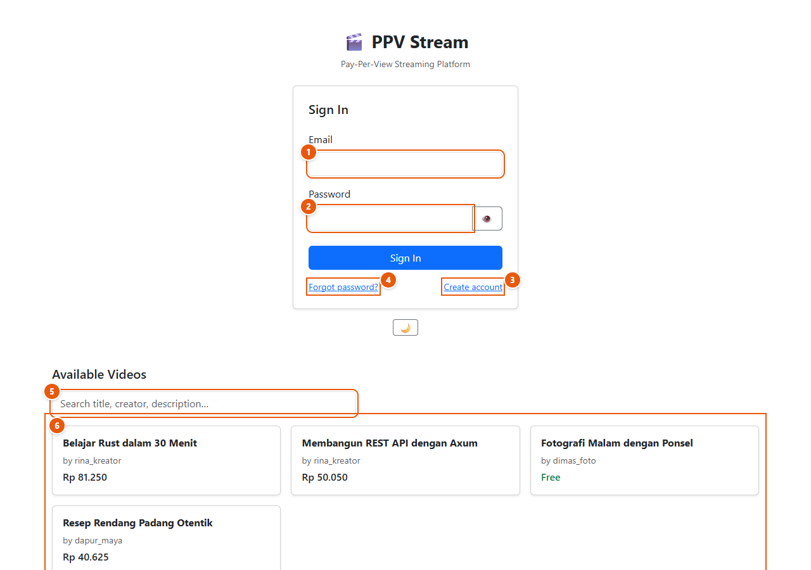
/- Email akun Anda.
- Password. Ikon mata menampilkan/menyembunyikan password.
- Create account: membuka halaman pendaftaran.
- Forgot password?: mengirim link reset ke email (butuh SMTP aktif).
- Pencarian judul, kreator, atau deskripsi. Tamu bisa melihat katalog tanpa login.
- Kartu video dengan harga dalam rupiah. Klik kartu untuk melihat detail; untuk membeli Anda diminta masuk.
Mendaftar akun
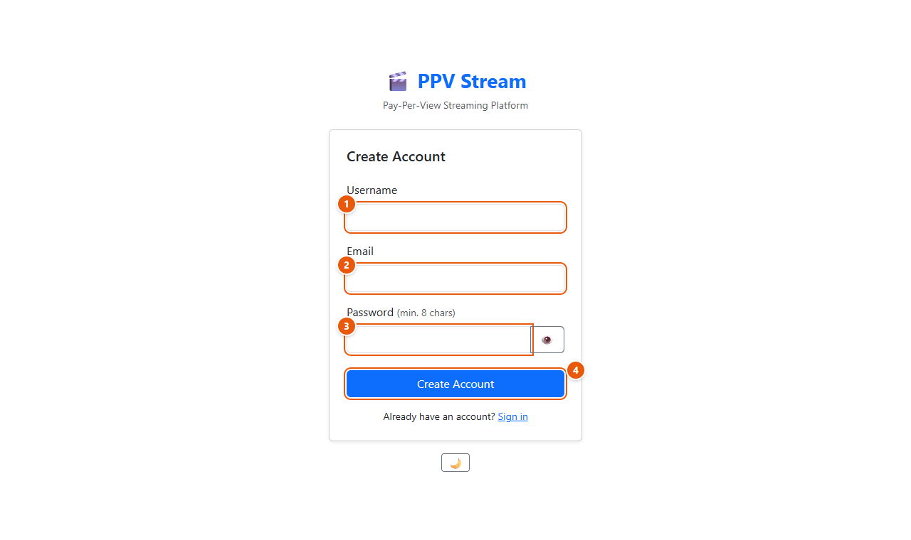
- Username: nama publik, juga dipakai sebagai kode referral.
- Email: untuk login dan reset password.
- Password: minimal 8 karakter. Gunakan password kuat yang tidak dipakai di situs lain.
- Create Account: akun dibuat, lalu masuk dari halaman depan (Sign in).
Setelah masuk, Anda langsung bisa menjadi penonton, kreator, dan affiliate. Tidak perlu mendaftar ulang per peran.
2 · Menonton dan membayar
Menu navigasi pengguna
Navbar yang sama muncul di semua halaman pengguna. Menu yang sedang dibuka ditebalkan.
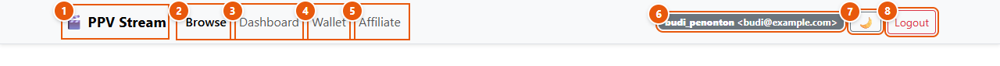
- PPV Stream: kembali ke halaman utama.
- Browse: katalog semua video.
- Dashboard: area kreator (profil, upload, video saya, allowlist, chat).
- Wallet: saldo, top up, tarik dana, transfer, riwayat.
- Affiliate: komisi dan link referral.
- Username <email>: akun yang sedang login.
- Tema: terang/gelap, tersimpan di browser.
- Logout: mengakhiri sesi. Selalu logout di komputer bersama.
Browse: mencari video
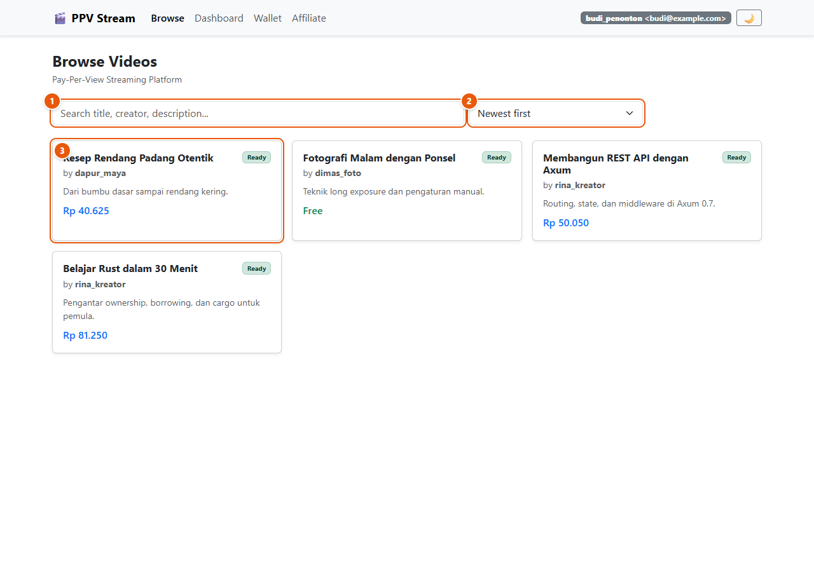
- Cari judul, kreator, atau deskripsi.
- Urutkan: terbaru, harga, dan lainnya.
- Kartu video: judul, kreator, status (Ready = siap diputar), dan harga. Free berarti gratis. Klik untuk membuka halaman tonton.
Membeli video
Halaman tonton menampilkan panel pembayaran bila video belum Anda miliki. Pilih salah satu tab metode. Tab hanya muncul bila diaktifkan admin.
- Buka video dari Browse atau link referral.
- Pilih tab metode: Wallet, gateway (Midtrans, Xendit, Stripe, PayPal), atau Blockchain x402.
- Selesaikan pembayaran. Setelah terkonfirmasi, pemutar video terbuka otomatis.
a. Bayar dengan saldo Wallet (paling cepat)
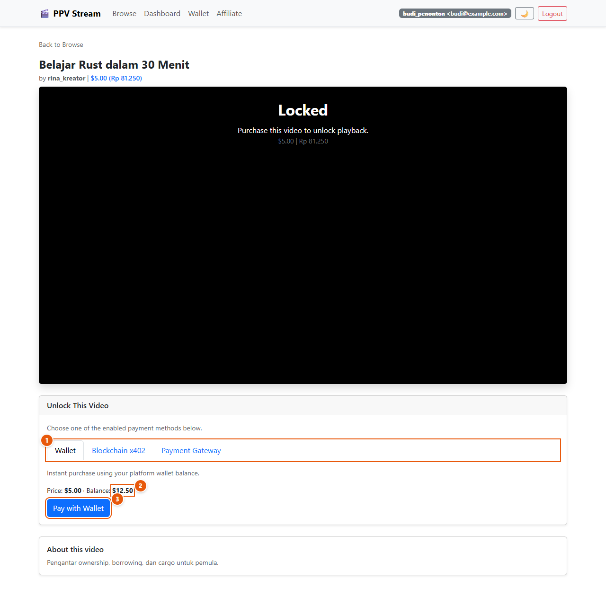
- Tab metode pembayaran.
- Saldo wallet Anda. Bila kurang, muncul peringatan dan tautan top up.
- Pay with Wallet: saldo dipotong dan video langsung terbuka.
b. Bayar lewat gateway (kartu, VA, e-wallet, PayPal)
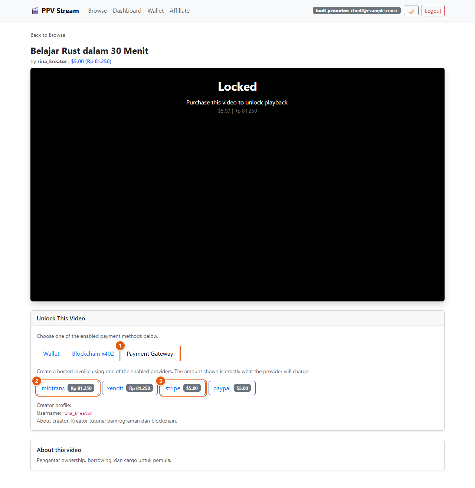
- Tab gateway.
- Midtrans / Xendit menagih dalam rupiah. Badge menunjukkan nominal final, misalnya Rp 81.250.
- Stripe / PayPal menagih dalam USD, misalnya $5.00.
Anda diarahkan ke halaman pembayaran provider. Setelah selesai, kembali ke halaman tonton. Akses terbuka saat webhook provider diterima dan nominalnya cocok.
c. Bayar dengan crypto (Blockchain x402)
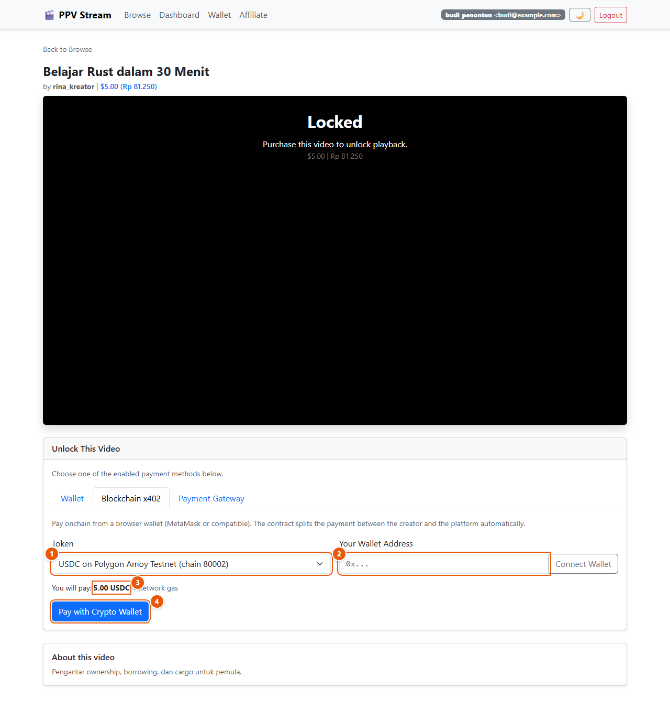
- Token: stablecoin (USDC/USDT, 1 token = $1) atau token native (POL) bila harga oracle tersedia.
- Wallet pembayar: terisi otomatis setelah menghubungkan MetaMask.
- Jumlah token yang akan ditagih, ditambah biaya gas jaringan.
- Pay: membuat invoice lalu membuka MetaMask.
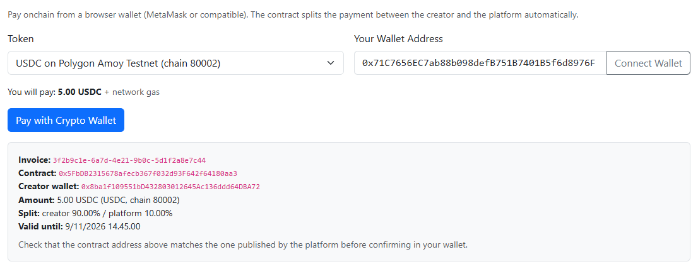
- Untuk token ERC-20, MetaMask meminta Approve (langkah 1 dari 2), lalu transaksi pembayaran (langkah 2).
- Invoice berlaku 15 menit. Jika halaman tertutup, buka lagi video yang sama: transaksi yang tertunda dilanjutkan otomatis.
- Setelah transaksi terkonfirmasi di jaringan, server memverifikasi dan membuka video. Gunakan Retry bila konfirmasi lambat.
d. Video sudah dimiliki
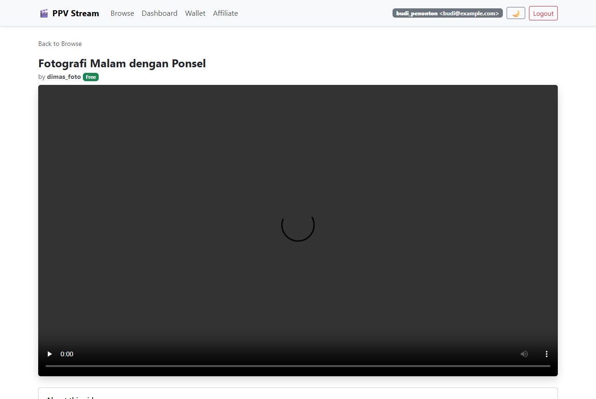
Video gratis atau yang sudah dibeli langsung diputar. Streaming memakai HLS dengan link bertanda tangan yang kedaluwarsa, sehingga link tidak bisa dibagikan.
Wallet: saldo, top up, tarik, transfer
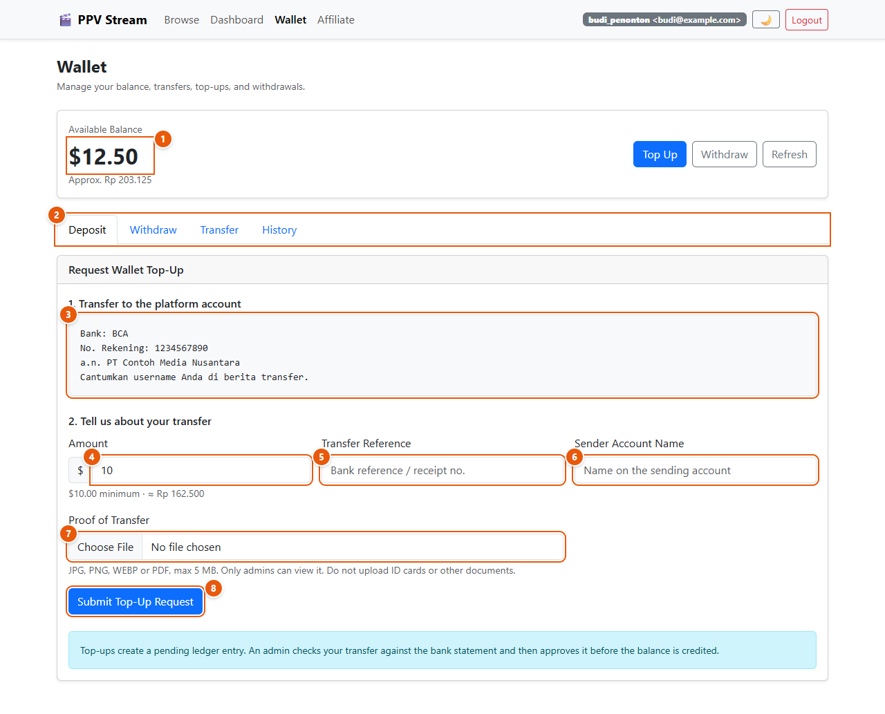
- Saldo tersedia dalam USD, beserta perkiraan rupiah.
- Tab: Deposit · Withdraw · Transfer · History.
- Instruksi transfer: rekening tujuan dari admin.
- Jumlah top up dalam dolar, minimal $10. Di bawah kolom tampil perkiraan rupiahnya.
- Nomor referensi transfer bank.
- Nama pengirim sesuai rekening.
- Bukti transfer (gambar/PDF, opsional tetapi mempercepat).
- Submit: permintaan masuk antrean admin dengan status pending.
- Transfer ke rekening di kotak instruksi.
- Isi formulir dan kirim. Saldo belum bertambah.
- Admin mencocokkan dengan mutasi bank, lalu menyetujui. Saldo bertambah dan status menjadi completed.
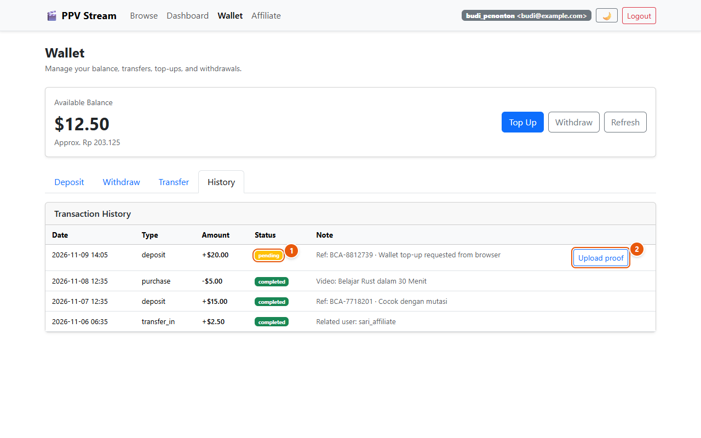
- Status: pending (menunggu admin), completed, atau rejected.
- Upload proof: menambahkan bukti transfer ke deposit yang masih pending.
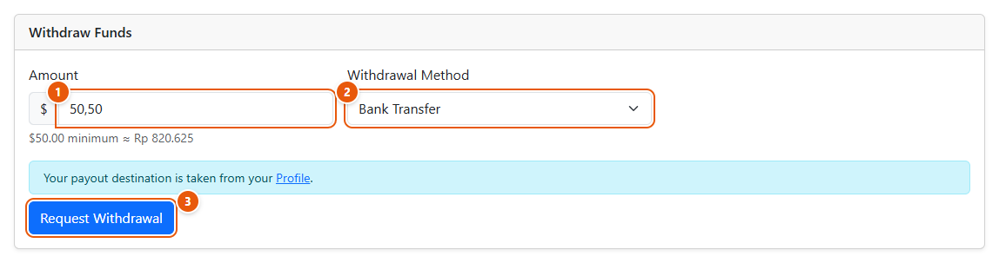
- Jumlah dalam dolar, minimal $50, beserta perkiraan rupiah.
- Metode: Bank Transfer atau crypto. Tujuannya diambil dari profil, jadi isi rekening/alamat wallet dulu.
- Request Withdrawal: saldo ditahan sampai admin mentransfer dana.
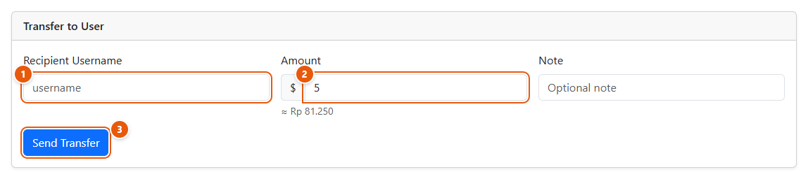
- Username penerima.
- Jumlah dalam dolar, misalnya
5atau19.99. Kolom Note opsional. - Send Transfer: saldo pindah seketika. Periksa username sebelum mengirim; transfer tidak bisa dibatalkan.
3 · Mengunggah dan menjual video
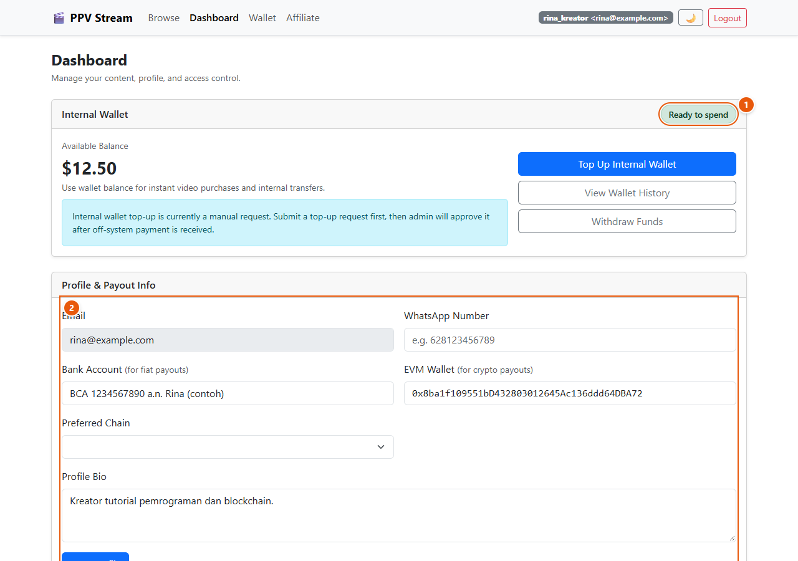
- Status wallet dan saldo. Tombolnya membuka top up, riwayat, dan tarik dana.
- Profile & Payout Info: lengkapi sebelum menjual.
Langkah 1 · Lengkapi profil payout
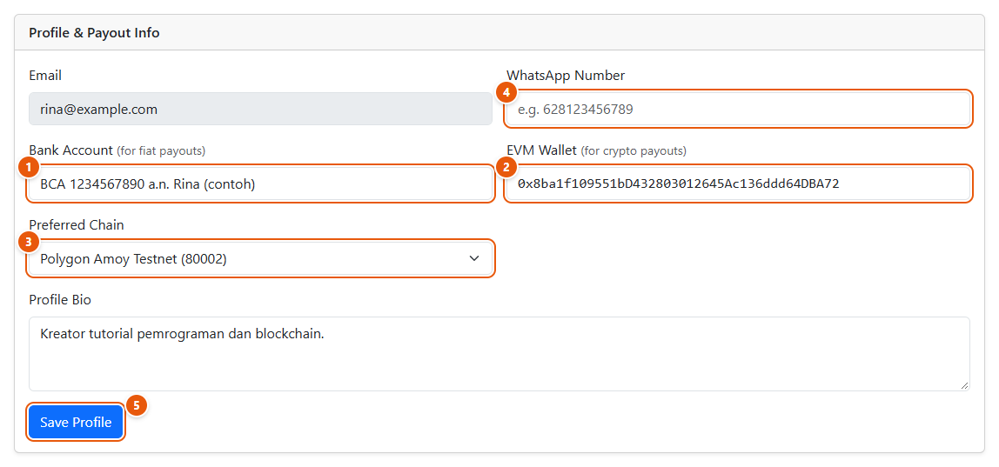
- Bank Account: tujuan pencairan fiat dan penarikan Bank Transfer.
- EVM Wallet: alamat penerima pembayaran x402. Tanpa alamat ini, tab crypto tidak muncul di video Anda.
- Preferred Chain: pilih jaringan yang sama dengan kontrak x402, misalnya Polygon Amoy (80002) saat uji coba atau Polygon Mainnet (137).
- WhatsApp (opsional).
- Save Profile.
Langkah 2 · Upload video dan atur harga
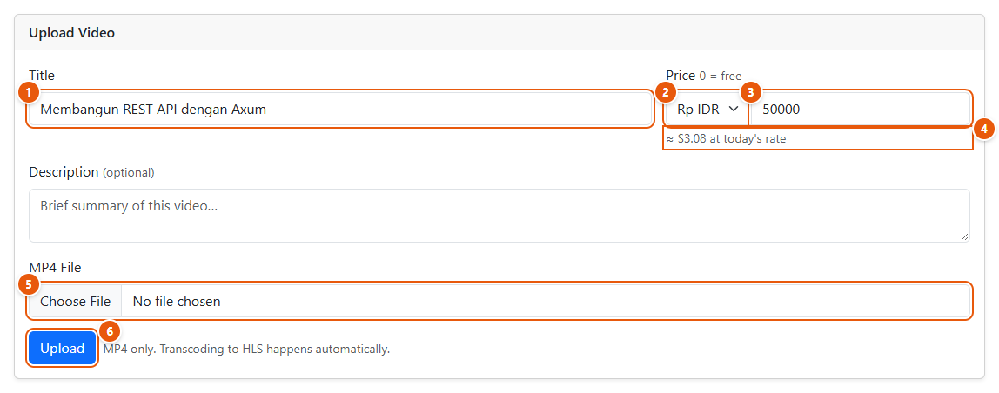
- Judul video.
- Mata uang:
$ USDatauRp IDR. - Harga.
0= gratis. - Perkiraan konversi dengan kurs hari ini. Harga rupiah ditagih persis lewat Midtrans/Xendit; harga USD-nya mengikuti kurs.
- File MP4.
- Upload: video diproses menjadi HLS. Status Processing berubah menjadi Ready setelah selesai.
Langkah 3 · Kelola video saya
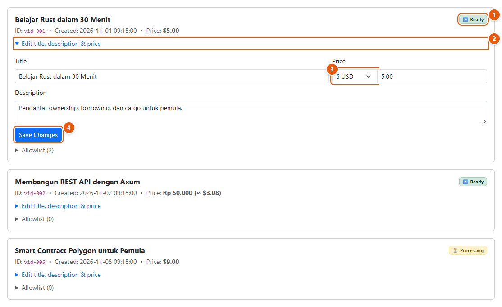
- Status transcoding: Ready atau Processing.
- Edit title, description & price: buka untuk mengubah.
- Mata uang dan harga bisa diganti kapan saja. Pembeli lama tetap punya akses.
- Save Changes.
Allowlist: akses gratis untuk pengguna tertentu
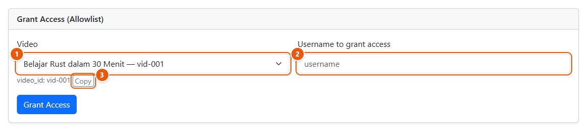
- Pilih video.
- Username yang diberi akses.
- Grant Access: pengguna itu bisa menonton tanpa membayar.
Chat
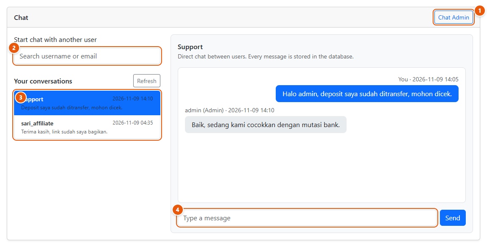
- Chat Admin: bantuan dari admin (misalnya deposit belum masuk).
- Cari pengguna untuk memulai chat baru.
- Daftar percakapan.
- Tulis pesan lalu Send. Pesan tersimpan di database; jangan kirim password atau nomor kartu.
Langkah 4 · Aktifkan komisi affiliate (opsional)
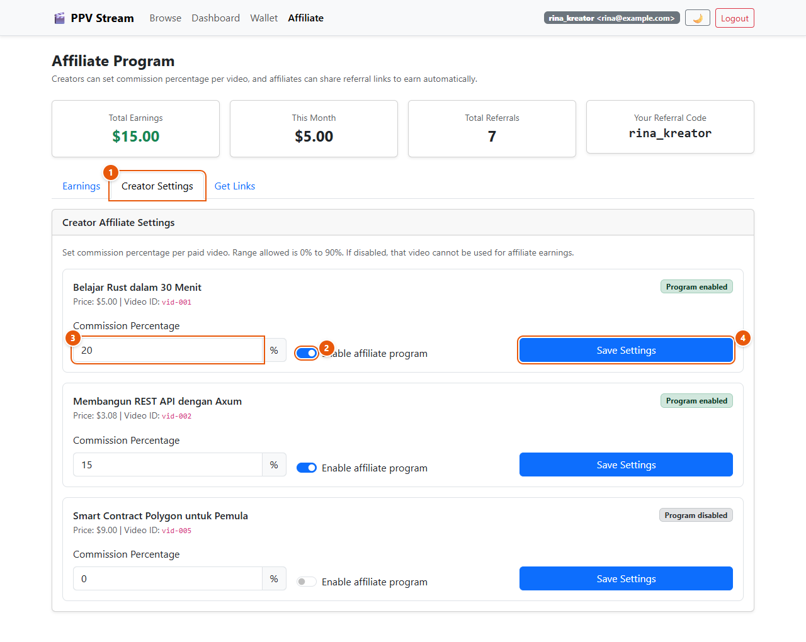
- Creator Settings.
- Enable affiliate program untuk video ini.
- Persentase komisi (0–90%).
- Save Settings. Komisi dipotong dari bagian kreator setiap penjualan lewat link referral.
Pendapatan penjualan masuk ke saldo Wallet (pembayaran fiat/wallet) atau langsung ke EVM wallet Anda (x402). Tarik saldo lewat Wallet → Withdraw.
4 · Membagikan link dan mendapat komisi
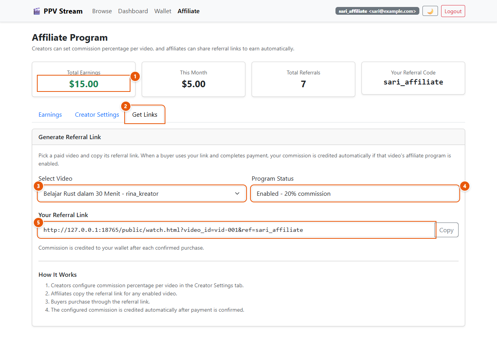
- Total komisi yang sudah diterima.
- Get Links.
- Pilih video berbayar.
- Status program: Enabled – 20% commission, atau Disabled bila kreator belum mengaktifkan komisi. Video disabled tidak menghasilkan komisi.
- Link referral berisi
&ref=username. Klik Copy lalu bagikan.
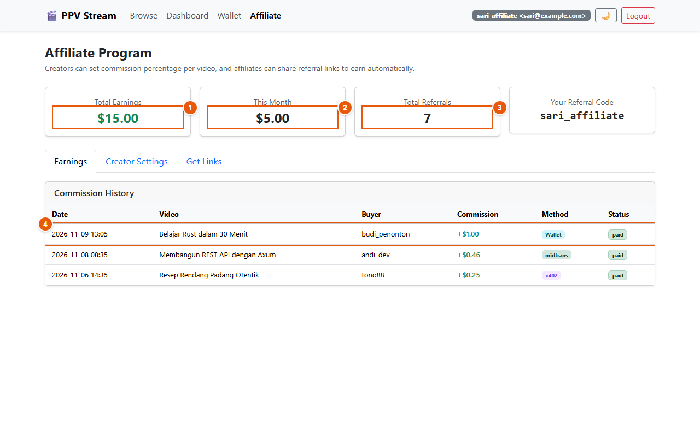
- Total komisi.
- Komisi bulan ini.
- Jumlah pembelian lewat link Anda.
- Riwayat per transaksi: video, pembeli, persentase, nominal.
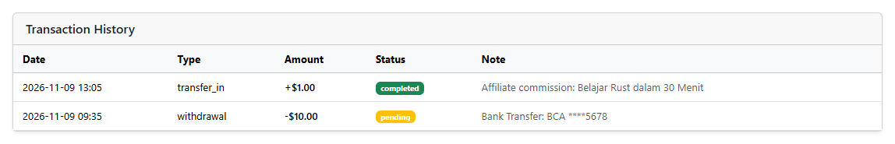
Komisi dikreditkan otomatis setelah pembayaran terkonfirmasi. Mempromosikan link tidak boleh memakai spam atau klaim menyesatkan.
5 · Mengelola platform
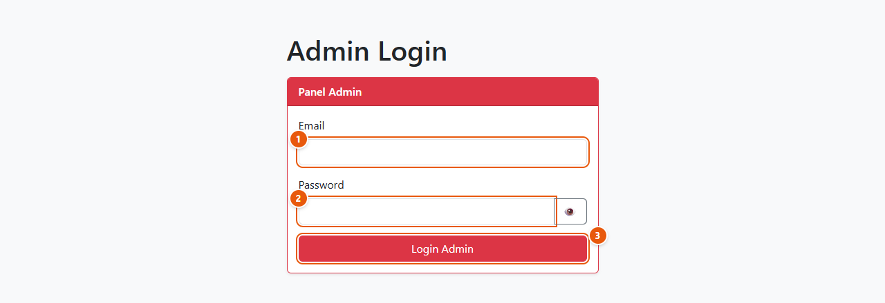
/public/admin/login.html- Email admin.
- Password admin.
- Login Admin.
Admin pertama dibuat lewat ADMIN_BOOTSTRAP_* (lihat setup.html). Setelah itu kosongkan token bootstrap. Jangan berbagi akun admin.
Dashboard dan menu admin
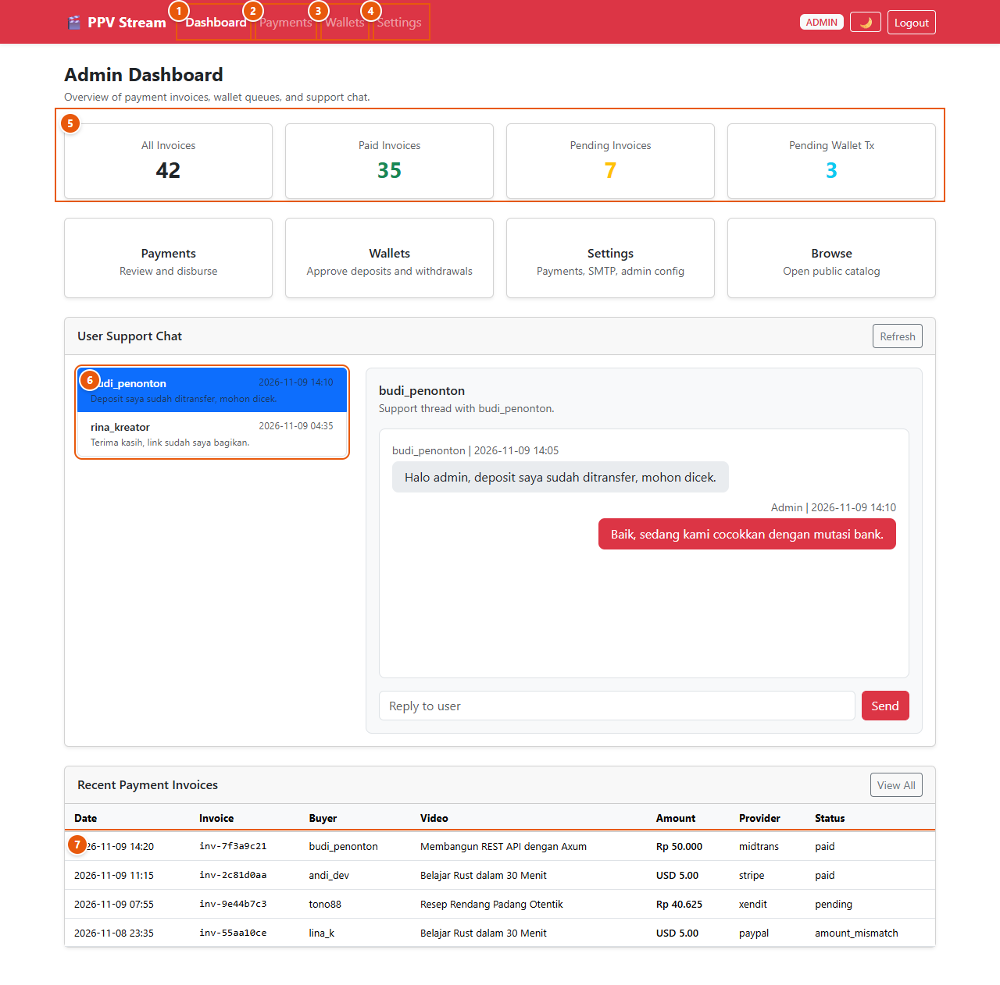
- Dashboard: ringkasan.
- Payments: invoice semua metode pembayaran dan pencairan.
- Wallets: antrean deposit dan penarikan.
- Settings: gateway, kurs, SMTP, storage, branding.
- Statistik: total invoice, lunas, pending, dan transaksi wallet yang menunggu.
- Chat dukungan: pilih pengguna untuk membalas.
- Invoice terbaru: nominal rupiah atau USD sesuai mata uang tagihan.
Menyetujui deposit
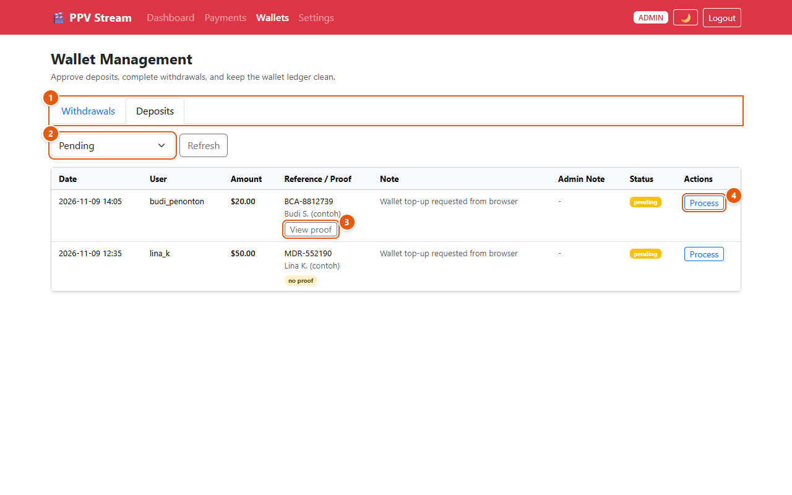
- Tab Withdrawals / Deposits.
- Filter status: Pending, Completed, Rejected.
- View proof: membuka bukti transfer. Baris tanpa bukti ditandai no proof.
- Process: membuka dialog keputusan.
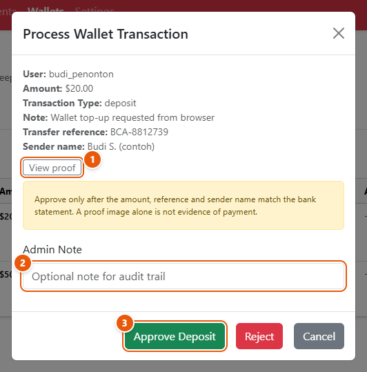
- View proof.
- Catatan admin untuk jejak audit.
- Approve Deposit: saldo pengguna bertambah. Reject menolak.
Memproses penarikan
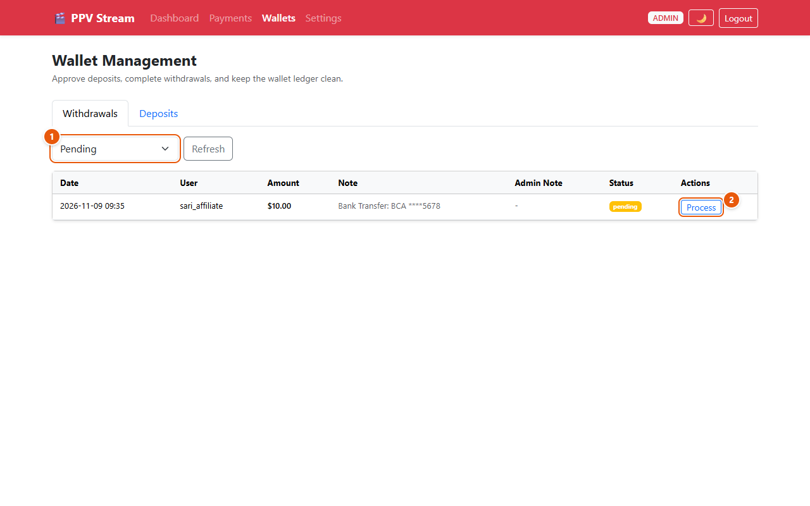
- Filter status.
- Process: transfer dana ke rekening/wallet pengguna di luar sistem, lalu tandai selesai dengan catatan referensi. Reject mengembalikan saldo.
Payments dan pencairan
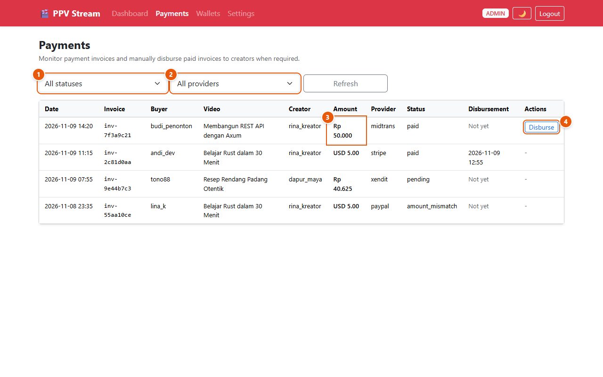
- Filter status: paid, pending, failed, amount_mismatch (nominal webhook tidak cocok; perlu diselidiki).
- Filter provider.
- Nominal: Rp untuk Midtrans/Xendit, USD untuk Stripe/PayPal.
- Disburse: mencatat pencairan bagian kreator untuk invoice lunas.
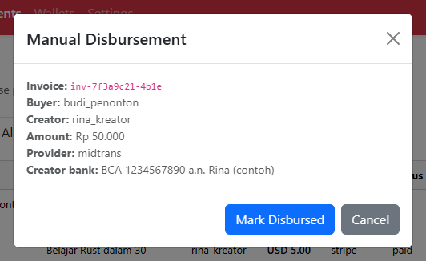
Dialog menampilkan invoice, pembeli, kreator, nominal, dan rekening kreator. Transfer bagian kreator di luar sistem, lalu klik Mark Disbursed.
Settings
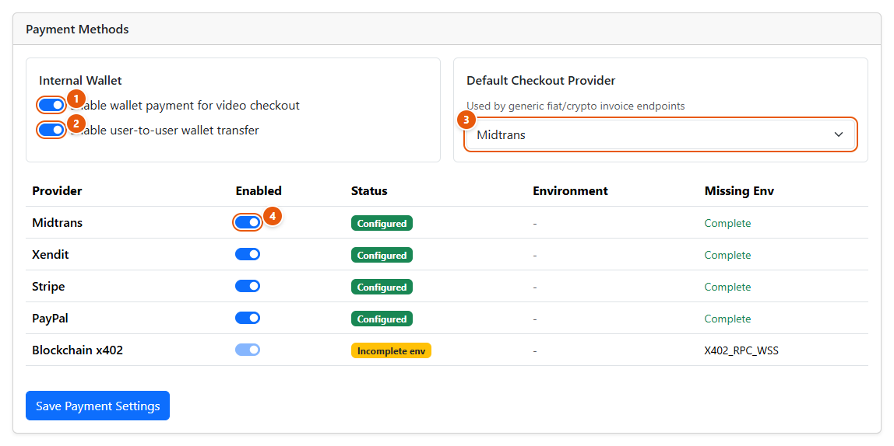
- Pembayaran video dengan wallet on/off.
- Transfer antar pengguna on/off.
- Provider default.
- Enabled: on/off per provider. Incomplete env berarti variabel lingkungan belum lengkap (kolom Missing Env menyebutkan yang kurang); provider itu tidak bisa diaktifkan.
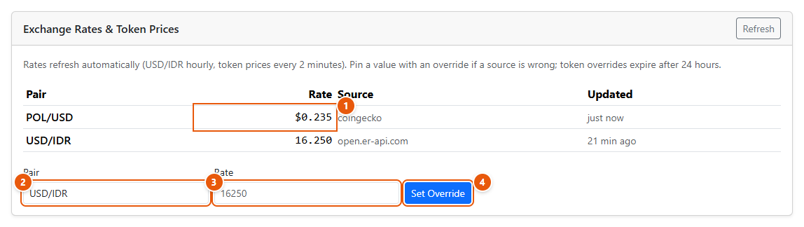
- Kurs terkini, sumber, dan waktu update. USD/IDR diperbarui tiap jam; harga token tiap 2 menit.
- Pasangan, misalnya
USD/IDRatauPOL/USD. - Nilai override.
- Set Override: dipakai bila sumber otomatis salah. Override token kedaluwarsa setelah 24 jam. Semua perubahan tercatat.
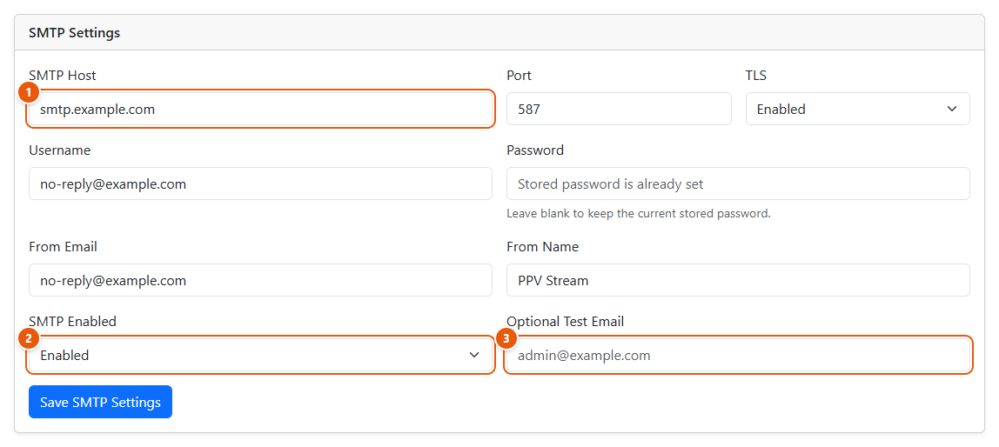
- Host SMTP beserta port, user, password.
- Aktifkan pengiriman email.
- Kirim email uji.
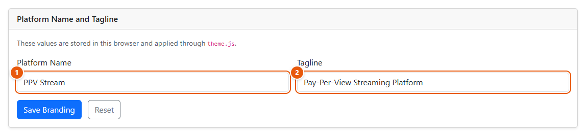
- Nama aplikasi.
- Tagline.
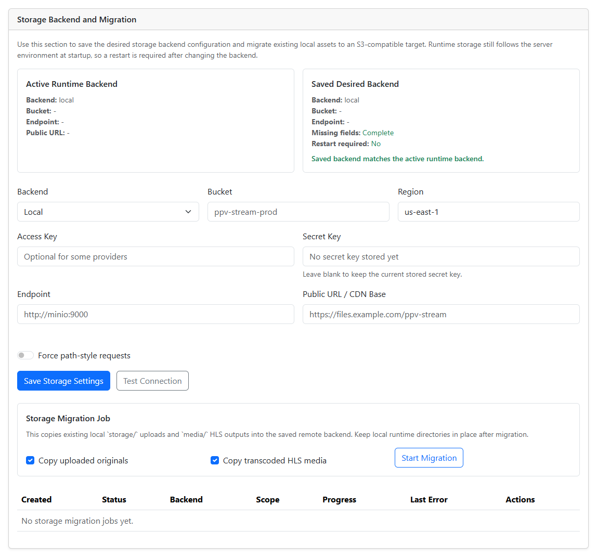
6 · Menggunakan di ponsel
Semua halaman memakai grid Bootstrap. Di layar sempit menu dilipat ke tombol ☰, tombol menjadi selebar layar, dan tab bisa digeser ke samping.
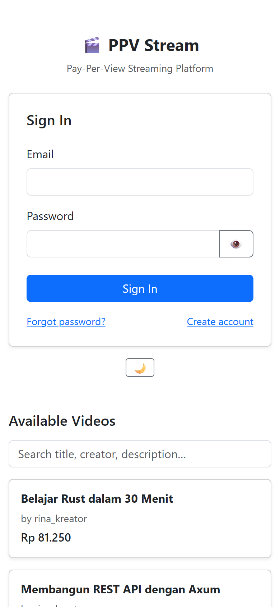
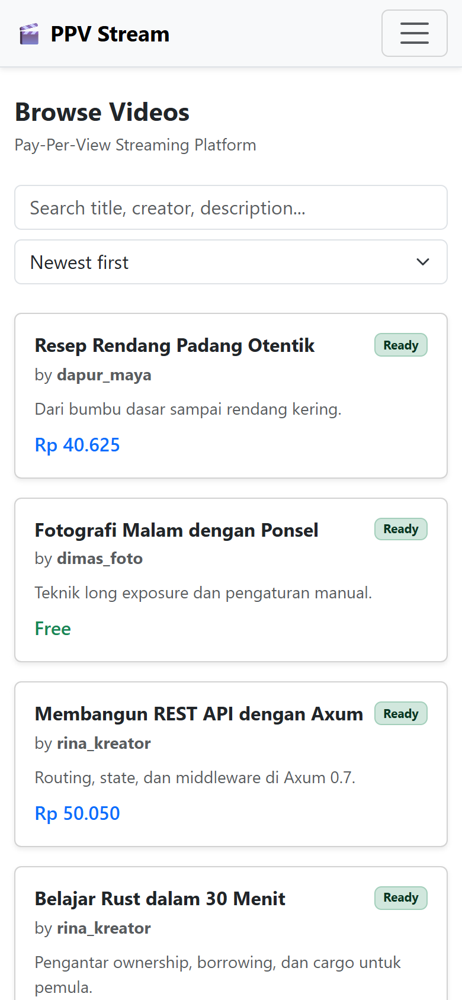
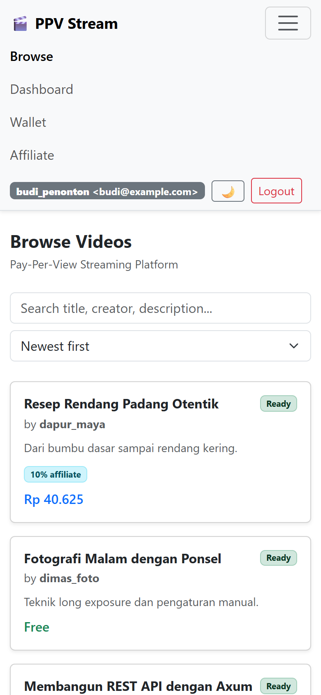
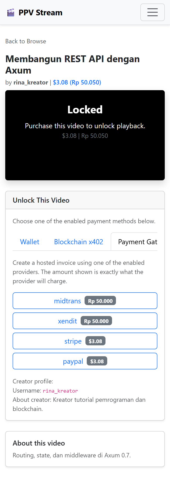
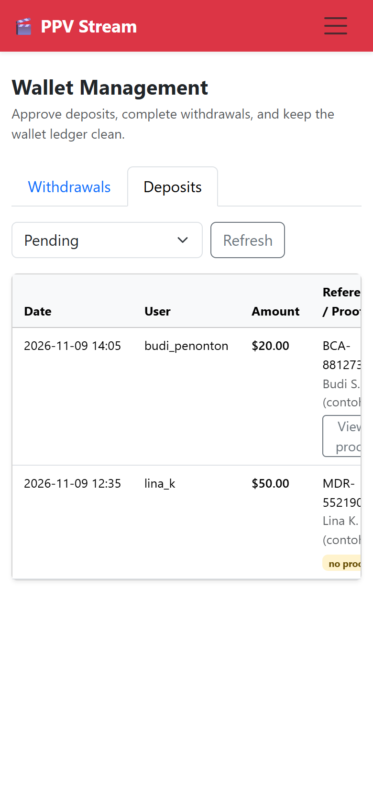
Pembayaran x402 di ponsel memerlukan browser di dalam aplikasi MetaMask (atau wallet lain yang menyuntikkan window.ethereum).
Aktivitas dan letak menunya
| Saya ingin… | Peran | Menu |
|---|---|---|
| Membuat akun | Tamu | Halaman depan → Create account |
| Reset password | Tamu | Halaman depan → Forgot password? |
| Mencari dan membeli video | Penonton | Browse → kartu video → tab pembayaran |
| Top up saldo | Penonton | Wallet → Deposit |
| Melampirkan bukti transfer | Penonton | Wallet → History → Upload proof |
| Menarik saldo | Semua | Wallet → Withdraw |
| Mengirim saldo ke pengguna lain | Semua | Wallet → Transfer |
| Mengisi rekening / alamat wallet | Kreator | Dashboard → Profile & Payout Info |
| Upload video, harga $ atau Rp | Kreator | Dashboard → Upload Video |
| Mengubah harga | Kreator | Dashboard → My Videos → Edit |
| Memberi akses gratis | Kreator | Dashboard → Allowlist |
| Mengatur komisi affiliate | Kreator | Affiliate → Creator Settings |
| Membuat link referral | Affiliate | Affiliate → Get Links |
| Melihat komisi | Affiliate | Affiliate → Earnings |
| Bertanya ke admin | Semua | Dashboard → Chat → Chat Admin |
| Menyetujui deposit / penarikan | Admin | Wallets |
| Mencairkan dana kreator | Admin | Payments → Disburse |
| Mengaktifkan gateway, kurs, SMTP | Admin | Settings |
Panduan terkait: tutorial.html (alur per peran), payments.html (metode bayar), setup.html (instalasi).
Keamanan dan data pribadi
| Data / tindakan | Yang perlu diperhatikan |
|---|---|
| Email, username, WhatsApp, rekening bank | Data pribadi. Hanya pemilik dan admin yang berwenang yang boleh melihat (A.5.34, A.8.3) |
| Bukti transfer | Bisa memuat nama, nomor rekening, dan saldo. Admin membuka hanya untuk verifikasi (A.5.15) |
| Alamat wallet EVM | Bersifat publik dan permanen di blockchain; transaksi dapat ditelusuri |
| Chat | Tersimpan di database. Jangan kirim password, OTP, atau data kartu |
| Akun admin | Satu orang satu akun, password kuat, logout setelah selesai (A.5.16, A.5.17) |
| Screenshot untuk dokumentasi | Gunakan data fiktif seperti di dokumen ini; jangan memotret data pengguna sungguhan (A.8.11) |